第三章 定时中断
3.1 Timer定时器简介¶
参考资料：江协科技B站视频
3.1.1 定时器简介¶
- TIM（Timer）定时器
- 定时器可以对输入的时钟进行计数，并在计数值达到设定值时触发中断
- 16位计数器、预分频器、自动重装寄存器的时基单元，在72MHz计数时钟下可以实现最大59.65s的定时
- 不仅具备基本的定时中断功能，而且还包含内外时钟源选择、输入捕获、输出比较、编码器接口、主从触发模式等多种功能
- 根据复杂度和应用场景分为了高级定时器、通用定时器、基本定时器三种类型
定时器类型
| 类型 | 编号 | 总线 | 功能 |
|---|---|---|---|
| 高级定时器 | TIM1、TIM8 | APB2 | 拥有通用定时器全部功能，并额外具有重复计数器、死区生成、互补输出、刹车输入等功能 |
| 通用定时器 | TIM2、TIM3、TIM4、TIM5 | APB1 | 拥有基本定时器全部功能，并额外具有内外时钟源选择、输入捕获、输出比较、编码器接口、主从触发模式等功能 |
| 基本定时器 | TIM6、TIM7 | APB1 | 拥有定时中断、主模式触发DAC的功能 |
不同的芯片拥有的定时器资源不同，例如STM32F103C8T6定时器资源：TIM1、TIM2、TIM3、TIM4
3.1.2 定时器框图¶
基本定时器
时基单元 基本参数
- PSC （预分频器），对输入的频率提前进行分频操作。
需要注意的是当预分频的值为 0 时，即对频率除 2 ，以此类推。
- CNT （计数器），计数器为16位，可以从 0 ~ 65535 计数。
- ARR （自动重装值） ，也成为 “ 计数周期 ” ，当计数器达到 ” 自动重装值 ” 以后触发更新清零，然后产生 中断 或 事件 。
这里产生的中断即 “ 更新中断 ”，后续配置好 NVIC 和 定时中断函数就可以进行中断任务。而事件即 “ 更新事件 ” 则不会触发中断，但可以触发内部其他电路工作。
简单提一下主从触发模式中的主模式自动触发DAC原理：
主模式可以将定时的 “ 更新事件 ” 映射到TRGO引脚，然后TRGO接到DAC的触发转换引脚。这样就完成了定时自动触发DAC而不需要中断触发DAC。
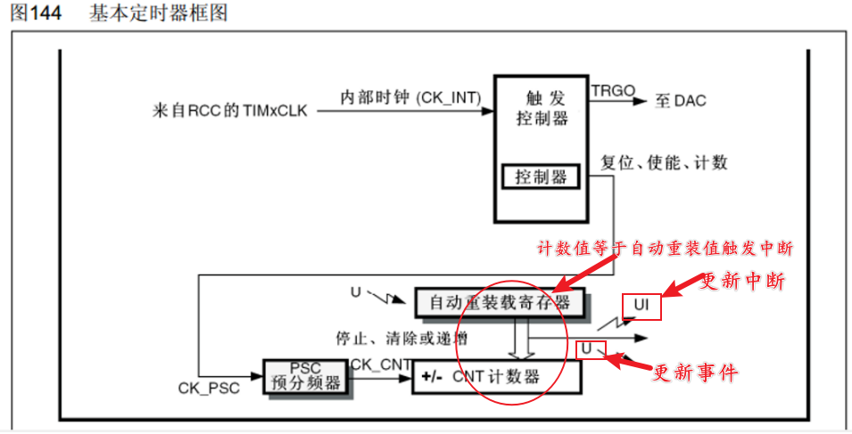
⚠：--基本定时器仅支持向上计数--时钟选择也仅支持内部时钟，为72MHZ
通用定时器
通用定时器的时钟源有多种选择
内部时钟最为常用，外部时钟首选外部时钟模式2。
- 内部时钟 （CK_INT）
- 外部时钟 1 （触发源有多种，具体可以看下图）
外部时钟 1 的触发源可以为：
- TIMx_ETR引脚
- ITR 0-3 （连接的为定时器，详情可看官方参考手册）
- TIMx_CH1的边沿 （即图中的TI1F_ED）
- TIMx_CH1 （即图中的TI1FP1）
- TIMx_CH2 （即图中的TI2FP2）
更多详细的这部分内容会在输入捕获介绍，先简单了解
- 外部时钟模式 2 （TIMx_ETR 外部触发输入）
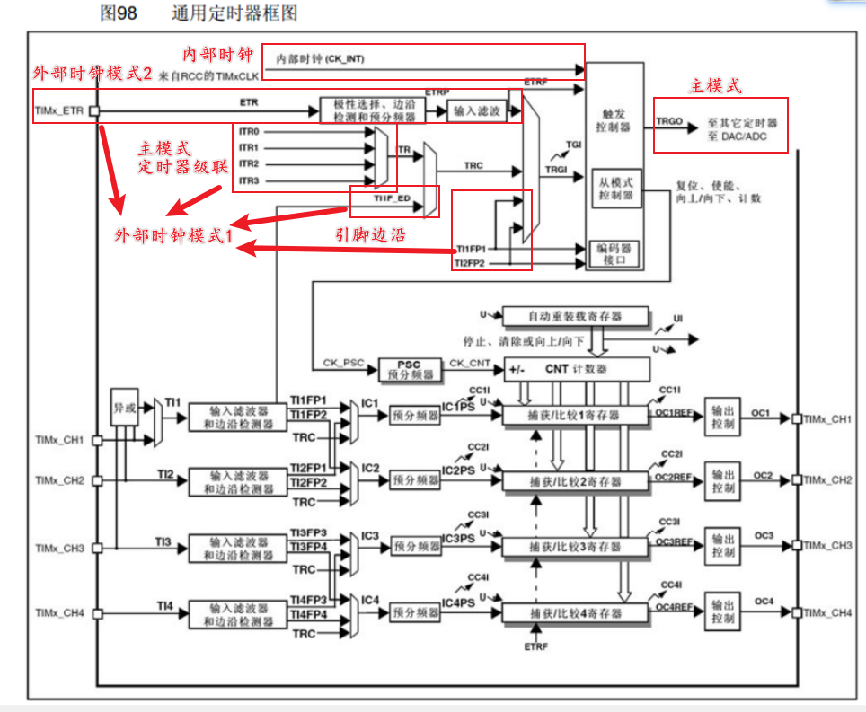
高级定时器
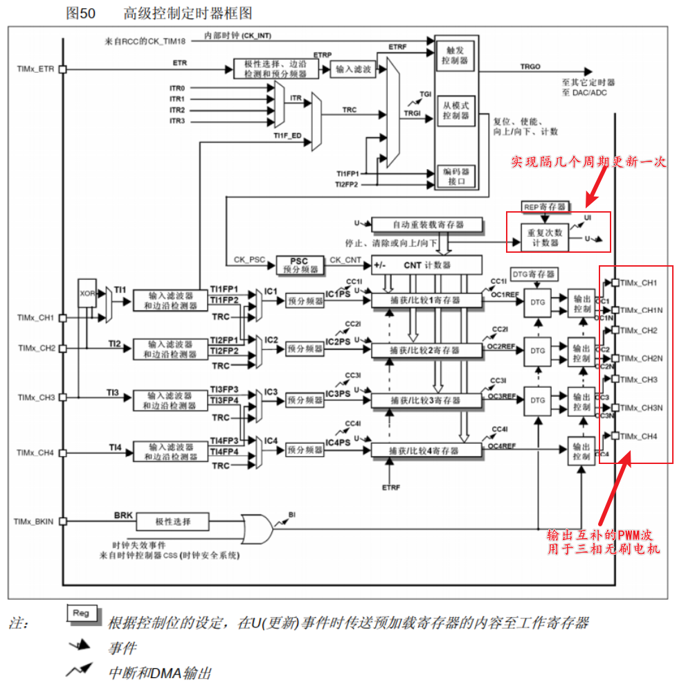
3.1.3 STM32CubeMX参数¶
参数很多，与上一节定时器框图对应，主从模式、输入捕获等可后续章节学习，先简单了解。
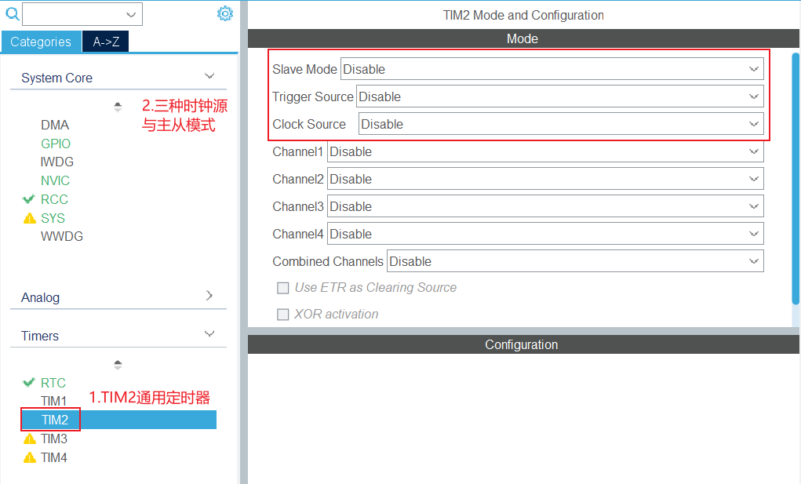
三个参数：
-
Slave mode ：从模式，在输入捕获章节配置 主从触发模式 会用到；也可以选择配置为 外部时钟 1 。
- External Clock Mode 1
- Reset Mode
- Gated Mode
- Trigger Mode
Reset Mode、Gated Mode、Trigger Mode在输入捕获章节介绍，暂时知道是和输入捕获相关即可。
-
Trigger mode ：触发模式，用于配置 主从触发模式 或 外部时钟 1 的触发源。
- ITR0
- ITR1
- ITR2
- ITR3
- ETR1（TIMx_ETR引脚）
- T1_ED
- T1FP1
- TI2FP2
可以看出与上一节所说的参数一致，由于很少用外部时钟 1 ，所以触发源更多在主从触发模式使用，故在输入捕获章节介绍，暂时知道是和输入捕获相关即可。
-
Clock mode ：时钟源，可以选择 内部时钟 和 外部触发输入 。
- Internal Clock
- ETR2（TIMx_ETR引脚）
3.2 定时中断¶
3.2.1 定时中断结构¶
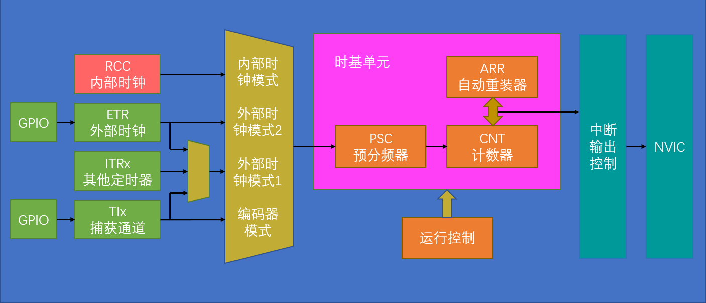
3.2.2 计数频率计算¶
Note
例1：时钟频率为 72 MHZ，预分频器Prescaler为 7199，则定时器计数频率为 10000HZ，也就是每 0.0001s 记 1 个数。
若是自动重装值ARR为 1000 ，那么便是每 0.1s 生成一个 “ 更新中断 ”。
Note
例2：为什么说在72MHz计数时钟下可以实现最大59.65s的定时？
首先要是的Prescaler和ARR的值都是16位的，所以最大为 65536-1=65535
3.2.3 STM32CubeMX配置¶
1. SYS配置¶
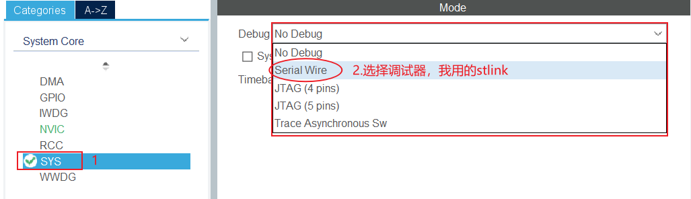

2. RCC配置¶

3. GPIO配置¶
配置PB0和PB1为输出模式
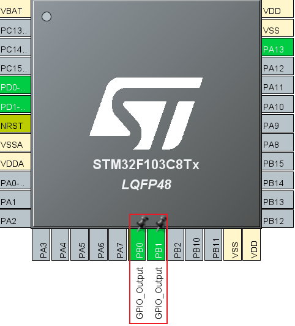
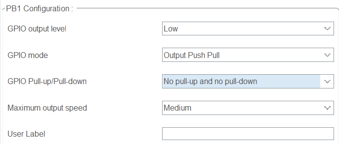
4. 定时器配置¶
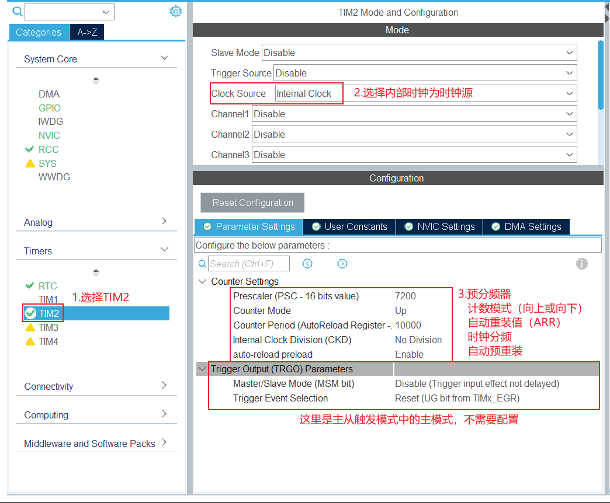
auto-reload-preload ：定时器的预加载机制是否开启，即允许在计数器到达最大值之前，提前将新的值加载到 ARR 寄存器中，以便下一个计数周期可以使用新的自动重载值。这种机制可以避免定时器在溢出事件发生时出现不必要的延迟，确保定时准确度打开即可。
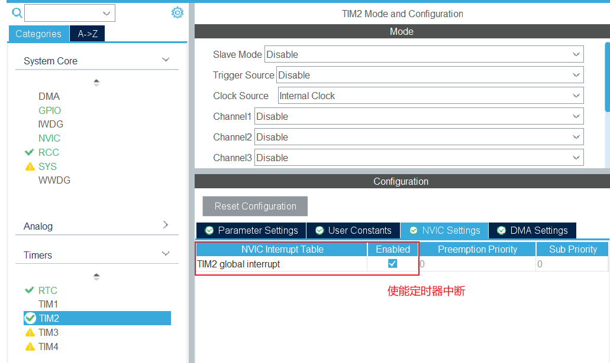
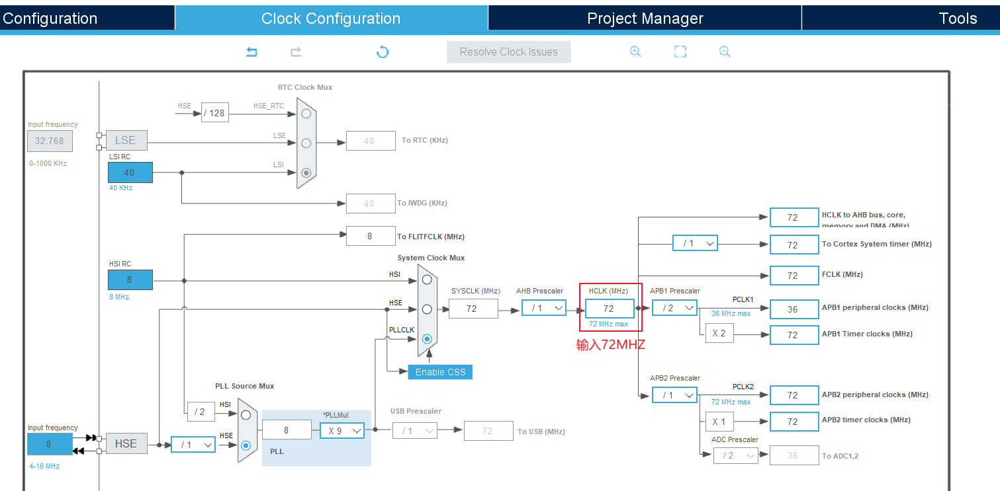
3.2.4 工程代码编写¶
完成配置以后，可以在stm32f1xx_it.c文件找到TIM2_IRQHandler函数
void TIM2_IRQHandler(void)
{
/* USER CODE BEGIN TIM2_IRQn 0 */
/* USER CODE END TIM2_IRQn 0 */
HAL_TIM_IRQHandler(&htim2);
/* USER CODE BEGIN TIM2_IRQn 1 */
/* USER CODE END TIM2_IRQn 1 */
}
总览一下中断处理函数：HAL_TIM_IRQHandler(&htim2)；这里包含了所以的定时器更新中断和事件处理内容，比如输出比较、输入捕获、定时中断等。
void HAL_TIM_IRQHandler(TIM_HandleTypeDef *htim)
{
uint32_t itsource = htim->Instance->DIER;
uint32_t itflag = htim->Instance->SR;
/* 捕获/比较通道 1 */
if ((itflag & (TIM_FLAG_CC1)) == (TIM_FLAG_CC1)) {...}
/* 捕获/比较通道 2 */
if ((itflag & (TIM_FLAG_CC2)) == (TIM_FLAG_CC2)) {...}
/* 捕获/比较通道 3 */
if ((itflag & (TIM_FLAG_CC3)) == (TIM_FLAG_CC3)) {...}
/* 捕获/比较通道 4 */
if ((itflag & (TIM_FLAG_CC4)) == (TIM_FLAG_CC4)) {...}
/* 定时器更新事件 */
if ((itflag & (TIM_FLAG_UPDATE)) == (TIM_FLAG_UPDATE)) {...}
/* Break 输入事件 */
if ((itflag & (TIM_FLAG_BREAK)) == (TIM_FLAG_BREAK)) {...}
/* 触发事件 */
if ((itflag & (TIM_FLAG_TRIGGER)) == (TIM_FLAG_TRIGGER)) {...}
/* 通讯事件 */
if ((itflag & (TIM_FLAG_COM)) == (TIM_FLAG_COM)) {...}
}
函数内容很多，我们现只关注定时中断内容，即 定时器更新事件 部分的代码，具体如下 ：
/* TIM Update event */
if ((itflag & (TIM_FLAG_UPDATE)) == (TIM_FLAG_UPDATE))
{
if ((itsource & (TIM_IT_UPDATE)) == (TIM_IT_UPDATE))
{
// 清除更新中断标志
__HAL_TIM_CLEAR_FLAG(htim, TIM_FLAG_UPDATE);
// 调用定时器更新回调函数
#if (USE_HAL_TIM_REGISTER_CALLBACKS == 1)
htim->PeriodElapsedCallback(htim); // 用户自定义的回调函数
#else
HAL_TIM_PeriodElapsedCallback(htim); // 默认回调函数
#endif
}
}
重要函数和参数介绍，了解即可：
TIM_FLAG_UPDATE /* 更新中断标志位 */
TIM_IT_UPDATE /* 更新中断是否使能 */
__HAL_TIM_CLEAR_FLAG(htim, TIM_FLAG_UPDATE) /* 清除中断标志位 */
USE_HAL_TIM_REGISTER_CALLBACKS /* 判断用户是否重写了HAL_TIM_PeriodElapsedCallback(htim)函数 */
htim->PeriodElapsedCallback(htim) /* 用户自定义中断函数 */
HAL_TIM_PeriodElapsedCallback(htim) /* 默认函数 */
完成自己的中断服务，我们需要在stm32f1xx_it.c文件中重写中断处理函数HAL_TIM_PeriodElapsedCallback，示例如下：
/* USER CODE BEGIN 1 */
void HAL_TIM_PeriodElapsedCallback(TIM_HandleTypeDef *htim) {
static unsigned char ledState = 0;
if (htim == (&htim2))
{
if (ledState == 0)
HAL_GPIO_WritePin(GPIOB,GPIO_PIN_0,GPIO_PIN_RESET);
else
HAL_GPIO_WritePin(GPIOB,GPIO_PIN_0,GPIO_PIN_SET);
ledState = !ledState;
}
}
/* USER CODE END 1 */
最后在main.c文件上方 使能TIM2 ，中断中的内容就可以实现：
Note
htim2是在tim.h上方定义的